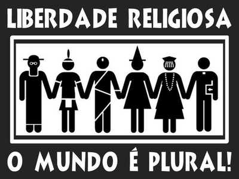

O QUE A PERSEGUIÇÃO RELIGIOSA CAUSA?

A perseguição religiosa pode ter sérias e duradouras consequências para as vítimas e para a sociedade como um todo. Algumas das principais consequências incluem:
1. Violência e Sofrimento: Indivíduos e comunidades podem enfrentar violência física, emocional e psicológica, levando ao sofrimento humano significativo. Isso pode incluir ferimentos, trauma emocional e perda de entes queridos.
2. Deslocamento Forçado: A perseguição religiosa muitas vezes leva ao deslocamento forçado de pessoas, forçando-as a abandonar suas casas, comunidades e até mesmo seus países devido às ameaças à sua segurança.
3. Intolerância e Divisões Sociais: A perseguição religiosa pode intensificar a intolerância religiosa e criar divisões profundas na sociedade, minando a coesão social e a harmonia entre diferentes grupos religiosos.
4. Restrição da Liberdade de Expressão: Aqueles que são perseguidos muitas vezes têm sua liberdade de expressão restringida, impedindo-os de praticar sua fé livremente e expressar suas crenças religiosas.
5. Impacto Econômico: Comunidades perseguidas podem sofrer economicamente devido à exclusão social e à falta de acesso a oportunidades educacionais e de emprego, resultando em pobreza e marginalização.
6. Efeito na Saúde Mental: Indivíduos que enfrentam perseguição religiosa podem sofrer de estresse pós-traumático, depressão e ansiedade devido às experiências traumáticas, afetando sua saúde mental a longo prazo.
7. Fuga de Talentos: Em algumas situações, a perseguição religiosa pode levar a uma fuga de talentos, onde pessoas altamente qualificadas e educadas deixam seus países em busca de segurança e oportunidades em outros lugares.
Essas consequências não apenas afetam as vítimas diretamente, mas também têm um impacto negativo na sociedade em geral, minando os direitos humanos e a liberdade religiosa.